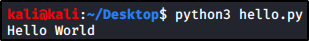

Functions in Python
Function definition:
Function is an organized piece of code that you can call using the function name
Function structure:
You actually need to indent your code or it will not work!
Can have args and can return args (using the “return” keyword)
def function_name(args):
# Code
...
return a_value
Function Examples:

Command Line Interpreter:

Command Line Python File:
File:

